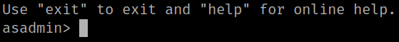
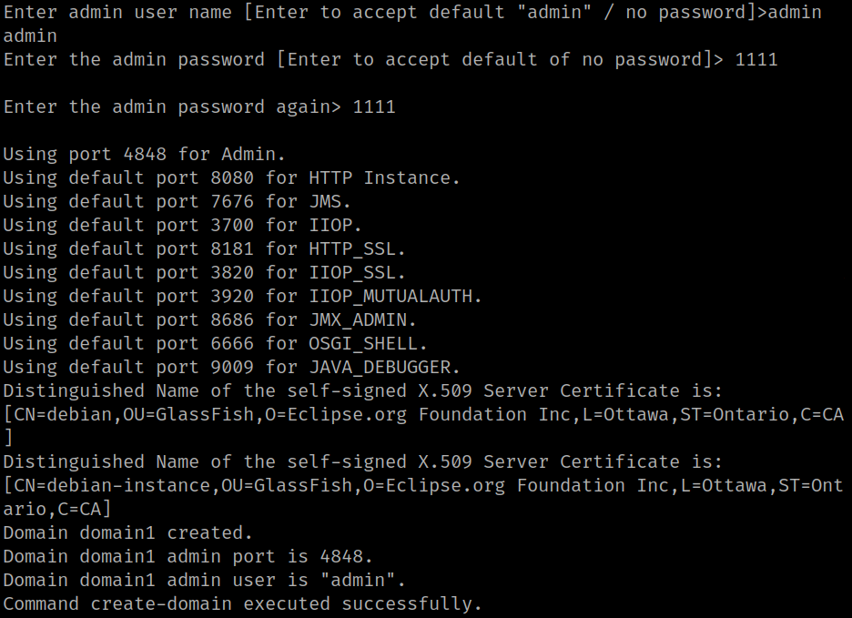
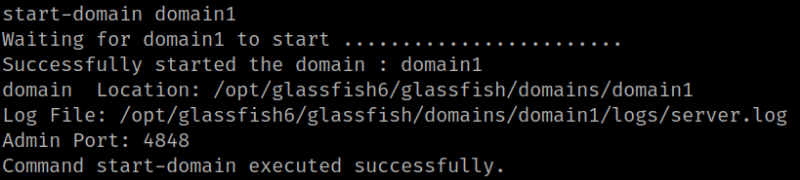
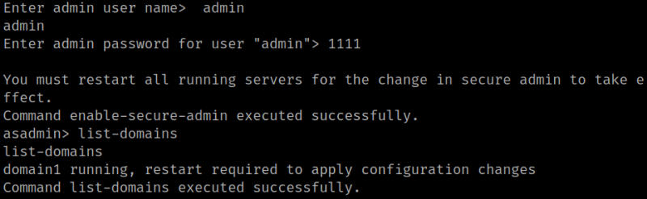
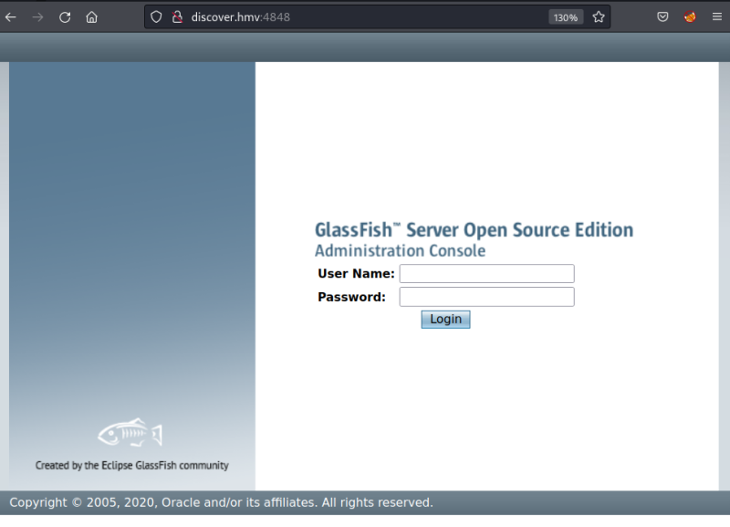
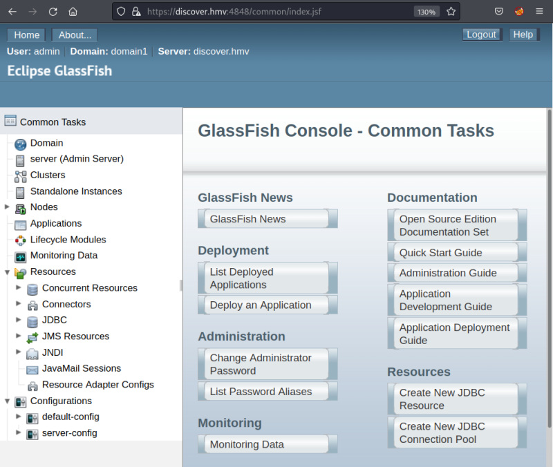

5.2 Run "/opt/glassfish6/bin/asadmin"
All information about “asadmin” is at https://glassfish.org/docs/5.1.0/administration-guide/domains.html#gitvz.
1. Run the command “/opt/glassfish6/bin/asadmin” as “root”.
discover@debian:/tmp$ sudo -u root /opt/glassfish6/bin/asadmin
Output:

2. You have to create a domain.
discover@debian:/tmp$ sudo -u root /opt/glassfish6/bin/asadmin> create-domain --adminport 4848 domain1
Output:

Credentials of the new domain: “admin” with a password (i.e. 1111).
3. Star the new domain.
asadmin> start-domain domain1
Output:

4. Enable secure admin.
asadmin> enable-secure-admin
Output:

5. Restart.
asadmin> list-domains
asadmin> stop-domain domain1
asadmin> start-domain domain1
6. Navigate to http://discover.hmv:4848/.

7. Log in with the credentials of your new domain (admin:1111). .

8. Go to “Applications”.